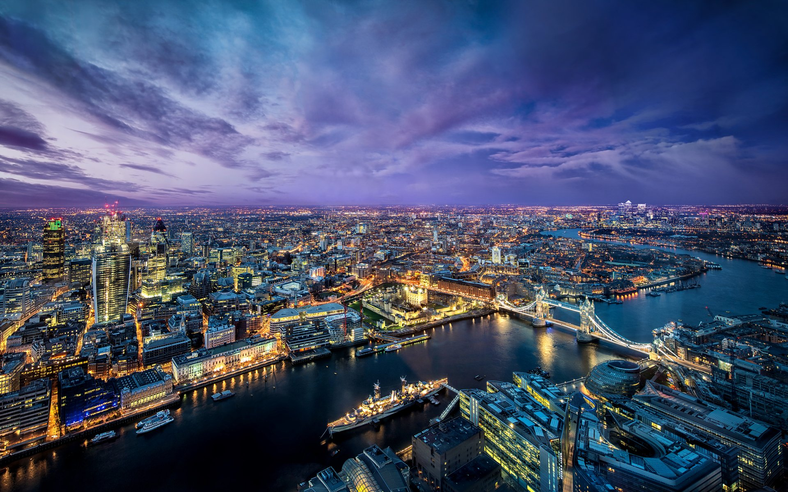
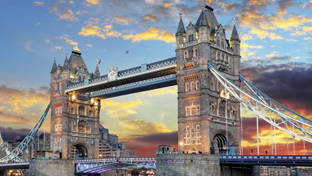

Londres
Londres é uma das maiores metrópoles do planeta, capital da Inglaterra e da Grã-Bretanha, localizada às margens do Rio Tâmisa. Esta cidade abriga hoje mais de 7 milhões de pessoas. Um dos mais importantes núcleos financeiros mundiais, ela integra com destaque o circuito político, cultural, artístico e fashion do globo.
 
Ela nasceu como Londinium, edificada pelo império romano na margem norte do Tâmisa, em 43 d.C. Não há vestígios anteriores de uma localidade povoada pelos celtas. Este recanto foi construído perto da Ponte de Londres, criada pelos romanos para que fosse possível a travessia do rio. O domínio de Roma perdurou inabalável até a chegada da tribo celta dos icenas, sob o comando da rainha Boadiceia. Os danos causados à cidade exigiram que ela fosse reedificada, o que impulsionou seu progresso. Ela chegou a atingir o status de capital da província Romana Britânica no século II.
CIDADE DE ORIGEM: